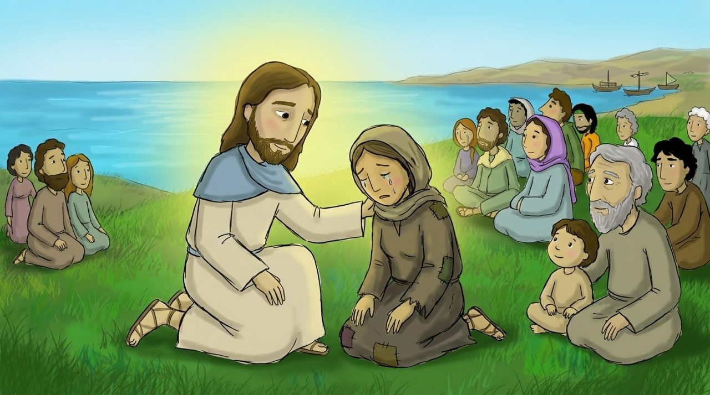
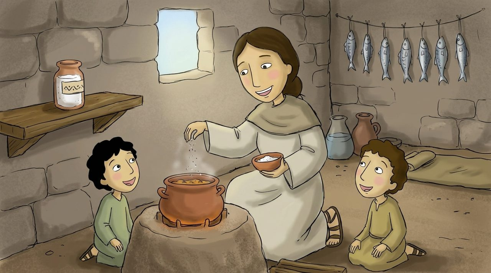
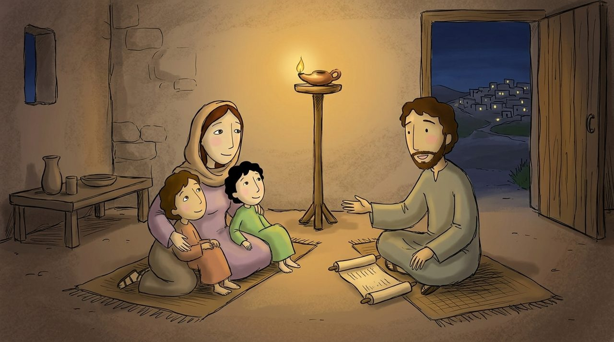

장면 1 · 5:1–2
산 위의 선생님
많은 사람이 예수님을 따라왔어요. 예수님은 에 올라가 앉으셨고, 제자들과 사람들이 둘러앉았어요.
예수님이 입을 열어 가르치기 시작하셨어요. 이 말씀을 ‘산 위에서 하신 설교’라고 불러요.
마태복음 5:1–16
노란 낱말을 누르면 뜻이 나와요. 🔊 버튼을 누르면 읽어 줘요.
많은 사람이 예수님을 따라왔어요. 예수님은 에 올라가 앉으셨고, 제자들과 사람들이 둘러앉았어요.
예수님이 입을 열어 가르치기 시작하셨어요. 이 말씀을 ‘산 위에서 하신 설교’라고 불러요.

예수님은 놀라운 말씀을 하셨어요. “마음이 가난한 사람은 이 있어요. 슬퍼하는 사람은 복이 있어요. 하나님이 위로해 주실 거예요.”
“한 사람, 남을 불쌍히 여기는 사람, 마음이 깨끗한 사람, 하게 하는 사람은 복이 있어요.” 하나님은 약하고 겸손한 사람을 귀하게 보세요.

예수님이 말씀하셨어요. “너희는 세상의 이다.”
소금은 음식을 맛있게 하고 썩지 않게 지켜 줘요. 예수님을 따르는 사람은 친구들 사이에서 좋은 맛을 내는 사람이에요.

“너희는 세상의 이다. 등불을 켜서 그릇 아래 두지 않고 위에 두어 온 집을 밝힌다.”
우리가 착한 일을 하면 사람들이 그것을 보고 하나님께 을 돌려요. 우리는 예수님의 빛을 비추는 작은 등불이에요.
“너희는 세상의 소금이다. … 너희는 세상의 빛이다.”
마태복음 5:13–14 · 어린이가 이해하기 쉬운 말로 옮김
는 세상의 이다. 너희는 세상의 이다.
빠진 낱말을 순서대로 눌러 보세요.
등잔대 위에서 환하게 빛나는 등불과 나를 그려 보세요.
예수님, 약하고 슬픈 사람에게 복을 주시는 사랑에 감사합니다. 저를 세상의 소금과 빛이라고 불러 주셔서 고맙습니다. 이번 주에 착한 일을 해서 예수님의 빛을 비추게 해 주세요. 예수님 이름으로 기도합니다. 아멘.